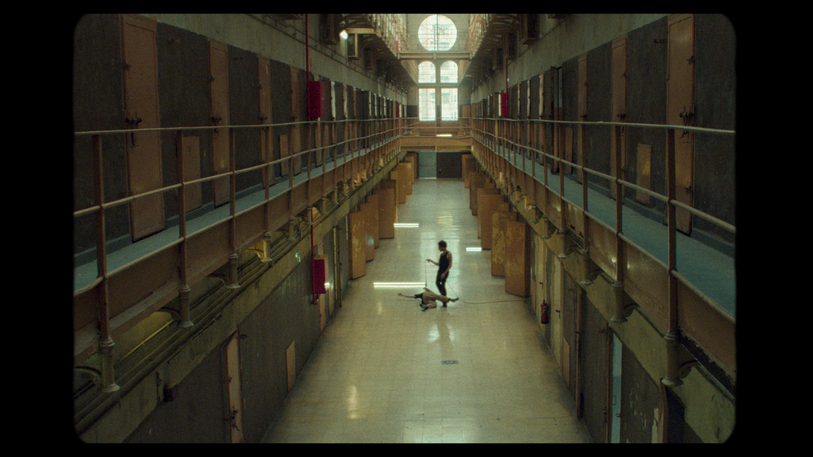
ADRIANO GALANTE
INAUDIT
[con el apoyo de Graner Centre de Creació, la Model, Escena y Patrimonio, El Antic Teatre, Dansa Metropolitana y el Institut de Cultura de Barcelona]
Una investigación performativa del patrimonio sonoro inaudible
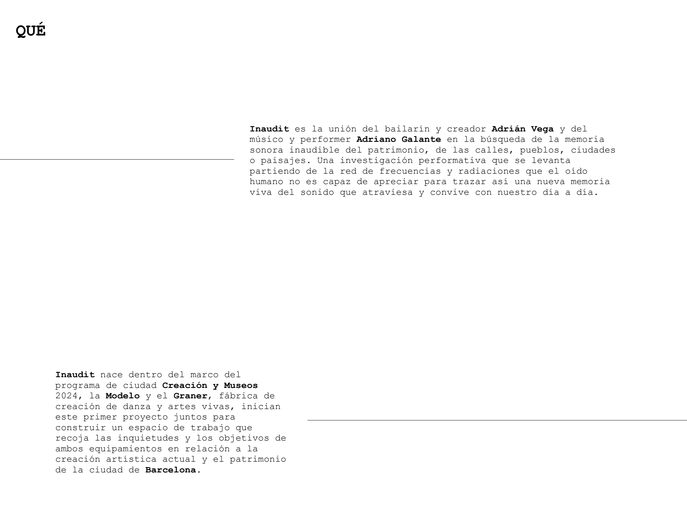
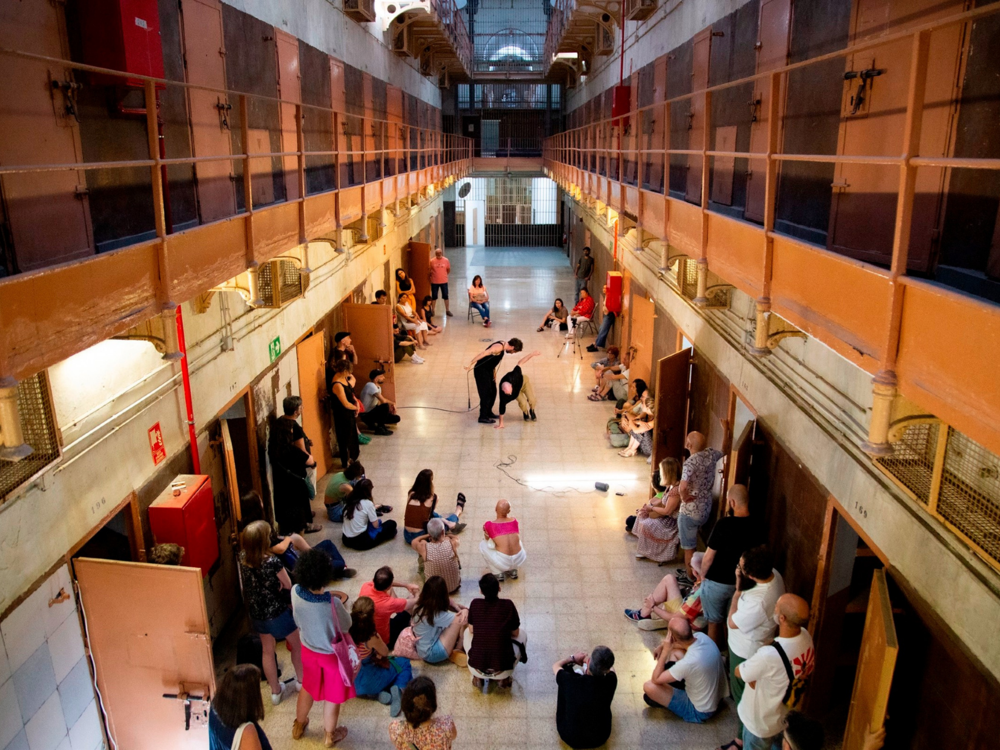
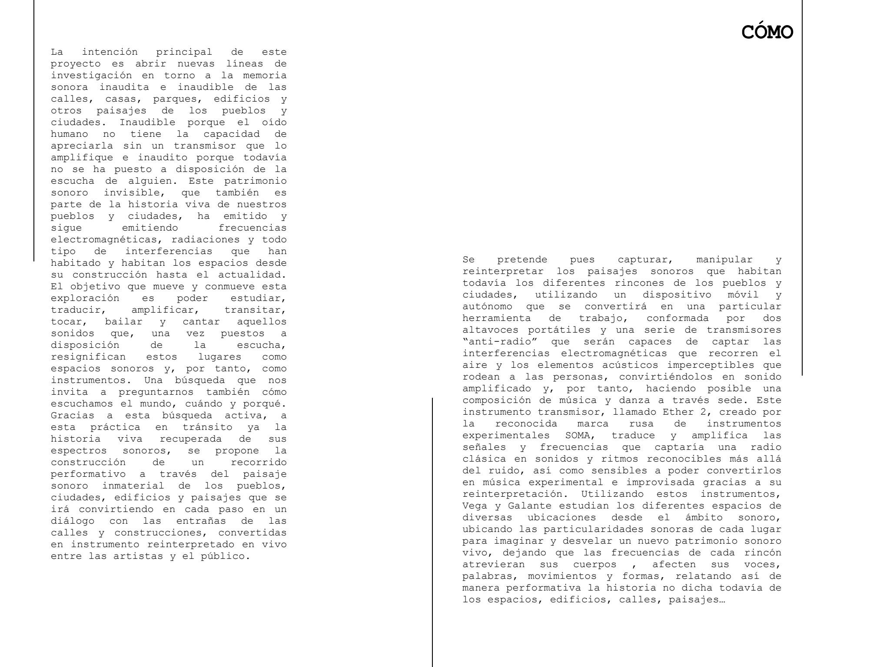
Esta investigación, así como cada experiencia performativa abierta a la mirada del público, sin duda formulará interrogantes relacionados con la capacidad de escucha de las personas, reconociendo, identificando y dando lugar a diversas formas de sonidos que no somos capaces de percibir en sociedad, pero que nos acompañan irremediablemente en nuestro día a día a través de la arquitectura sonora de las ciudades. Una investigación que, además de ser apta de ponerse en práctica en todo tipo de museos, construcciones y patrimonios, invita a repensar incluso cómo estos elementos sonoros pueden llegar a afectar a las personas a pesar de su invisibilidad, poniendo en cuestión las nuestras perspectivas en torno a los conceptos de ruido y silencio, así como nuestras propias derivas en torno a la idea de libertad.
Para reproducir aquí los vídeos, abre la vista local: Ver vídeos en la página ↗
Interpelando a los espacios como si de un instrumento se tratara y partiendo de sus experiencias previas con música experimental, flamenco, improvisación y danza urbana, Adrián Vega y Adriano Galante compondrán una memoria sonora viva a través de cuerpo, sonido y movimiento en ubicaciones puntuales reconocidas previamente durante el procedimiento indagatorio para con el lugar, levantando así un nuevo mapa del patrimonio sonoro de los pueblos y ciudades en la actualidad.
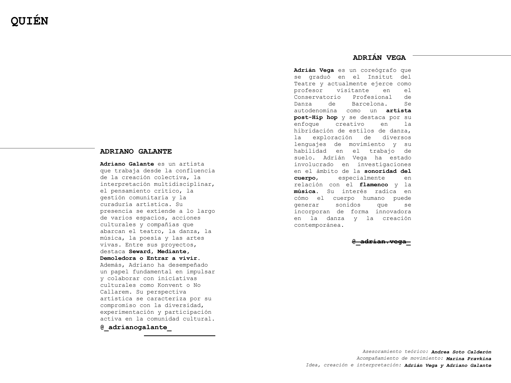
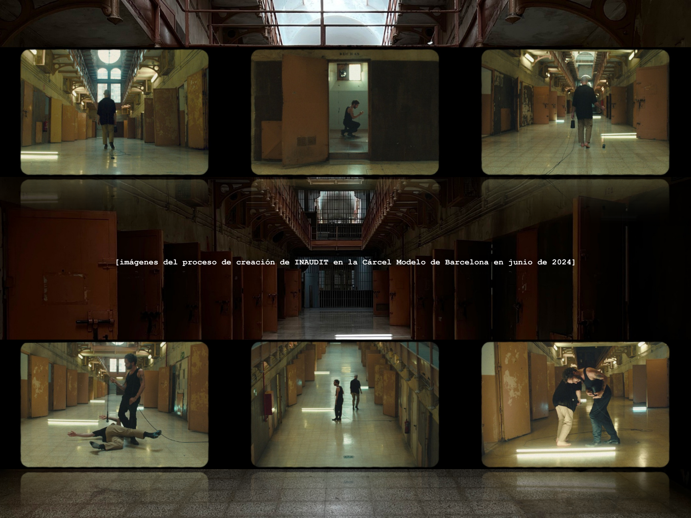
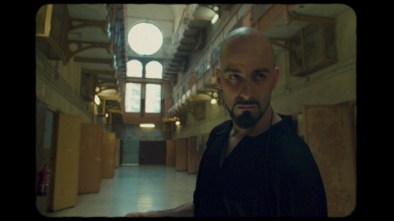
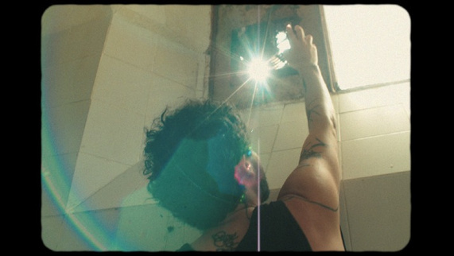
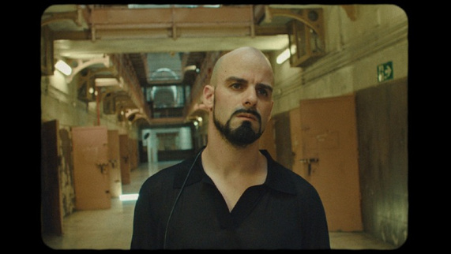
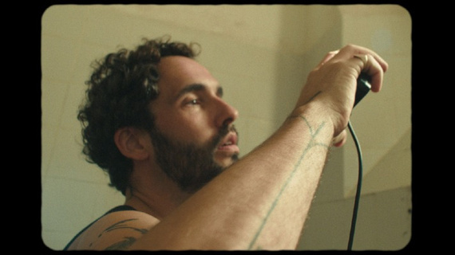
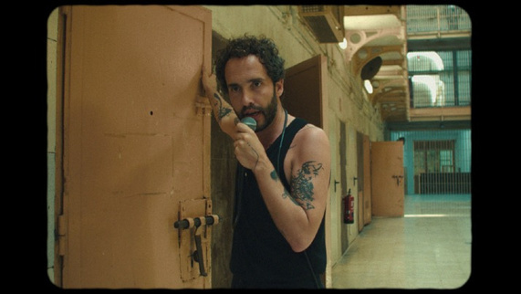
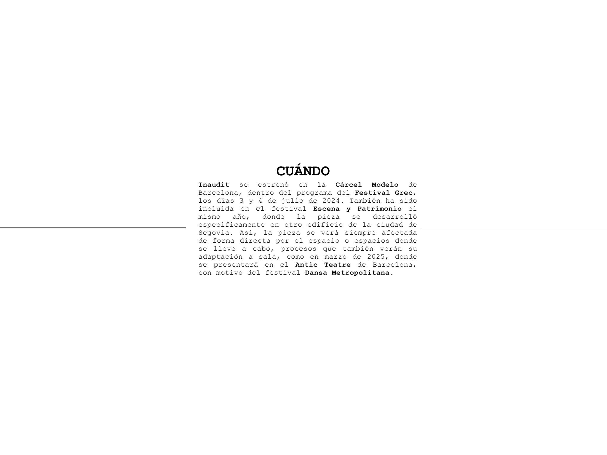
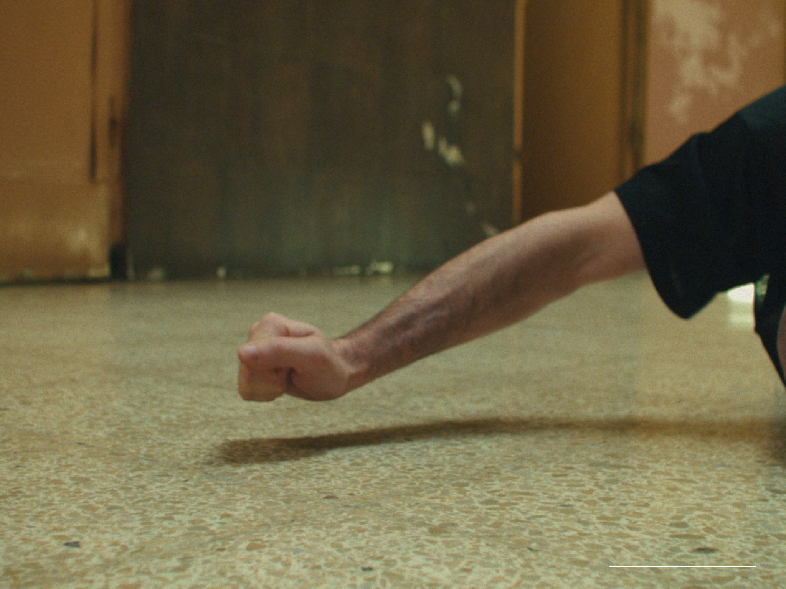
ADRIANO GALANTE